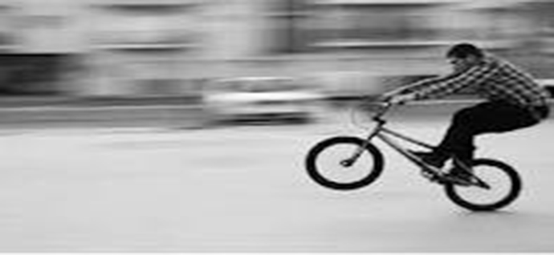
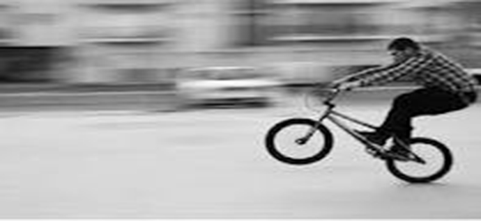

پنینگ
پنینگ یا کنارگردی دوربین،
نام تکنیکی در عکاسی میباشد که برای نشان دادن تحرک سوژهها به کار میرود. پنینگ در حقیقت به حرکات افقی، عمودی و یا چرخشیِ یک تصویر ثابت و یا ویدئو اشاره دارد. در این تکنیک یا سوژهٔ اصلی متحرک است که آن را از محیط ثابت اطرافش مجزا میکند یا سوژه ثابت است و دوربین حرکت میکند که عکاسی هر دو حالت منجر به القای حس تحرک در عکس میشوند. کاهش سرعت شاتر باعث بیشتر نمایان شدن تحرک در عکس میگردد.
دراین شیوه دوربین روی سه پایه قرار گرفته بصورت از چپ به راست یابلعکس می چرخد وعکاس ثابت است.بنابراین
۱-لنز دوربین رافقط یک بار نسبت به فاصله با موضوع تنظیم شود(فوکوس)به دلیل جلوگیری ازتغییرعمق میدان،دیافرگم باید ثابت باشددرعکاسی باحرکت چرخشی(پنینگ)از موضوعات مسطح ودرعکاسی باحرکت خطی درتراولینگ برای عکاسی ازموضوعات کروی،حتماحلقه متراژروی بی نهایت تنظیم شود اگر کمترکمتربود حتما دیافرگم کاملا بسته شودولی جواب مطلوبی نخواهد بود.
۲-درعکاسی پانورامیگ بادوربین معمولی ازلنز های واید استفاده نکنید زیرالنز واید کناره های تصویررا دچار اعوجاج می کند،بنابراین لنزنرمال یا کمی تله باشدودرآخربه تغییرنورهم توجه شود.